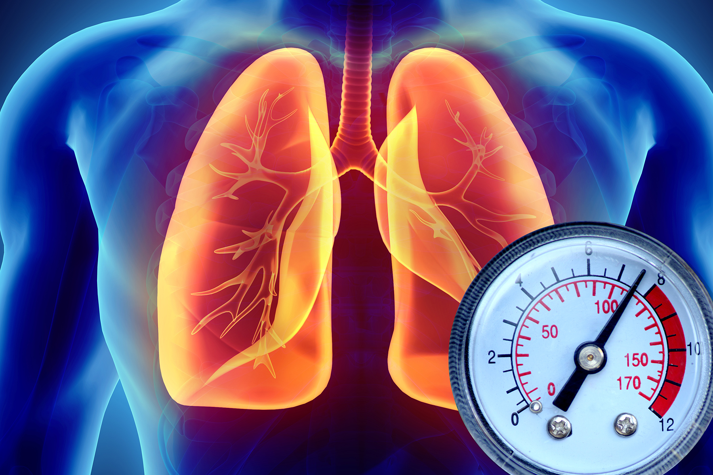

REŠITE SE HIPERTENZIJE: Očistite krvne sudove kod kuće. Novi prirodni preparat koji je doktore ostavio U ŠOKU!
S
vi znaju da su visoki krvni pritisak, moždani udar i srčani udar posledice „kontaminiranih“ krvnih sudova holesterolom.
Sedam od deset ljudi umire zbog blokade arterija srca ili mozga. Praktično u svim slučajevima, razlog takvog strašnog kraja su jednokratni skokovi zbog hipertenzije. "Tihi ubica", kako ga nazivaju kardiolozi, godišnje oduzima milione života.
Da li su ovo neki od vaših simptoma?
- Glavobolja
- Hipertenzivni skokovi
- Bolovi u zglobovima
- Vrat se ne može okrenuti i leđa se ne mogu saviti.
- Uveče su noge upaljene, ujutru lice otečeno. Zujanje u ušima.
- Prsti postaju hladni.
Ništa nije dovoljno. Mnogi će reći da je to starost, ali nije.
Kako možete sigurno očistiti krvne sudove kod kuće?
Na ova pitanja odgovara šef odeljenja za vaskularnu hirurgiju Instituta za kardiovaskularne bolesti u Bukureštu, dr Horatiu M.
Dr Horatiu M obavio je preko 19.700 operacija.
Koji su simptomi da su krvni sudovi začepljeni "prljavštinom"? Kako razumeti da Vam telo govori "Uskoro očistite krvne sudove!".
Ako imate dijagnozu hipertenzije - tada ne možete da slušate. Visoki krvni pritisak je kraljica oštećenih krvnih sudova.
Začepljenje krvnih sudova holesterolom, ugrušcima krvi, kalcifikacija su u osnovi prirodni procesi starenja. Naravno, savremena hrana, pušenje i konzumiranje alkohola ubrzavaju proces „prljavštine“ 5-8 puta. Ali svi smo ljudi i ne možemo ih izbeći, ovo je svet u kojem živimo.
Da li patite od fluktuacije krvnog pritiska? Da li je stalno visok i trebate uzimati preparate? Dakle, krvni sudovi su 30% čisti. Ostatak je prekriven holesterolom, ugrušcima krvi i kalcijum-oksidom.
Stoga čak i najmanji stres, promene vremena, odmah utiču na Vas. Krvni pritisak se podiže, glava vam počinje pucati, javlja se bol u zglobovima.
7 Skrivenih Simptoma Začepljenih Krvnih Sudova
-
1. Edem:Prljavi krvni sudovi nemaju vremena da ispumpaju tečnost. Poremećen metabolizam vode i soli. Uveče su stopala upaljena, a čarape ostavljaju tragove na zglobovima. Otečeno lice i kesice ispod očiju. Nemoguće je da uklonite prstenove s prstiju. Natečeni stomak je pokazatelj edema u unutrašnjim organima.
-
2. Zujanje u ušima:Od jedva čujnog cviljenja do glasnih vrisaka i zvižduka koji ometaju sposobnost koncentracije. To je posledica visokog krvnog pritiska u krvnim sudovima mozga, koji vrše pritisak na bubne kapke.
-
3.Vrtoglavica:Osećaj "pijane" glave, jake i nagle epizode vrtoglavice ukazuju na to da je vestibularni aparat "gladan". Često pati i sluh.
-
4. Nesanica:Pospanost i letargija, ali ne možete spavati kad legnete u krevet? To je zbog nedostatka krvi u hipofizi. Više ne proizvodi melatonin - hormon sna.
-
5. Umor:Uopšte nemate snage. Ne želite ništa da radite. Samo želite spavati i jesti. Sve to zato što telo prelazi u režim uštede energije. Organi ne dobijaju pravilnu ishranu kroz prljave krvne sudove, pa telo pokušava da smanji svoju aktivnost.
-
6. Poremećaji vida:Pred očima vidite „guske“, tačke, paru i maglu. Ovo su simptomi vaskularnog poremećaja oka.
-
7. Bol u zglobovima:Zbog vremenskih prilika - zglobovi propadaju i uvijaju se. Kada se probudite ujutru, niste budni i odmorni, već ukočeni, kao osoba sa invaliditetom, polu-paralizovani. Potrebno je neko vreme da pomerite ukočene zglobove u snu.
U većini slučajeva pacijenti pate od nekoliko simptoma istovremeno, u različitim kombinacijama.
Kako se uspešno rešiti Hipertenzije?
100% Prirodan Preparat obezbeđuje trenutnu apsorpciju živih molekula. Ekstrakti obogaćeni kiseonikom lako se apsorbuju kroz zidove jednjaka. Stoga Hipertonin ne izaziva žgaravicu, gorak ukus u ustima, promuklost, ne nadražuje creva, već štiti želudac. Hipertonin se preporučuje čak i u slučaju čira.
Od čega se sastoji Hipertonin?
- Kopriva - eliminiše blokade prouzrokovane naslagama holesterola. Molekuli uklanjaju čestice holesterola sa površine zidova krvnih sudova, tako krv može slobodno da cirkuliše.
- Ekstrakt gloga - Zarobljava „razdvojene“ čestice holesterola i, u kombinaciji sa njima, pretvara se u lipoproteine visoke gustine koji su uključeni u proces rastvaranja masti.
- Vitamin B2 ublažava vaskularne grčeve. Deluje kao "valerijana" u krvnim sudovima. Smiruje i opušta krvne sudove koji su zapušeni zbog nedostatka krvi. Krvni pritisak se lako i sigurno vraća u normalu.
- Tiamin čisti krvne sudove istovremeno identifikujući krvne ugruške. Eliminiše naslage kalcijum-oksida iz krvnih sudova koje su preostale od primene hemijskih lekova.
- Ekstrakt kore vrba istovremeno popravlja zidove krvnih sudova. Mikro oštećenja, područja koja su pretrpela vaskularne rupture, obnavljaju se molekulima vrbe kao i nanošenjem flastera. Mozak je dobro zaštićen od udaraca. Ćelije mozga primaju ishranu i kiseonik i osetićete prijatan osećaj lagane glave.
Kao rezultat toga, proizvođač Hipertonina raskinuo je ugovor sa svim apotekama i proizvod distribuirao samo putem interneta. Hipertonin je sada dostupan u specijalnoj ponudi.
KAKO DA NARUČIŠ?
(POTREBNO JE POPUNITI FORMU KOJA SE NALAZI ISPOD)
VAŽNO: PODACI O HIPERTONINU SE ŠIRE NEVEROVATNOM BRZINOM, REAGUJTE NA VREME DOK ZALIHE TRAJU
 OBAVEŠTENJE: Još 4 Pakovanja Preostalo. Promocija se završava u:
OBAVEŠTENJE: Još 4 Pakovanja Preostalo. Promocija se završava u:
Dodaj svoj komentar
Svetlana K
Hipertonin NAJBOLJI METOD OD SVIH! U početku sam uzimala Adelphan, a zatim i Erinit. Znam da su to anahronske droge. Ali ne volim ići kod doktora i to me nije mnogo mučilo. Povremeno sam ih uzimala kada mi se povisio krvni pritisak ili tuklo srce. Ali tada su prestali da se ponašaju. I otišla sam kod lekara, i on mi je savetovao da isprobam novi Hipertonin preparat (mladi doktor je verovatno još uvek bio ubeđen da preparat treba da pomogne ljudima, a ne da zarađuje). Hipertonin mi je pomogao od prve primene - krvni pritisak mi polako padao mada sam ja konstantno merila, a zatim sam uradila kompletan tretman, kao što je preporučio lekar. Nakon 3 nedelje, zaboravila sam šta znači hipertenzija. To je bio problem za mene kao ženu i nema traga. Osećam se ponovo kao žena!
Reply. 13 . Like . Pre 13 minuta
Mirjana K
Kako se naručuje ovo? Da li je probao neko?
Odgovori. 6 . Like . 13 minutes ago
Ljubiša D
Primio sam Hipertonin kako je napisano! Napetost, glavobolje gotovo svake večeri, ako se popnem na zidove, ni liekovi protiv bolova nisu pomogli. Iako sam kasnije saznao da su glavobolje izazvane napetošću. Ali to nije važno. Jedan čovek mi je preporučio Hipertonin, uspeo sam da ga naručim putem ovog programa i bio sam veoma zadovoljan. Za 2 meseca postao sam potpuno drugačija osoba! Shvatio sam da pre čišćenja krvnih sudova, u stvari, ne živim! Glava me više ne boli, varikozne vene su prošle i NAJVAŽNIJE - GUBIM 21 kg! Od 95 kg do 74! To znači normalizovanje cirkulacije krvi! Preporučujem svima Hipertonin, čak i preventivu!
Odgovori. 19 . Like . Pre 12 Minuta
Kristina M
Čitala sam u novinama o ovome, neverovatno, izgleda da ima ljudi koji ne žele samo da zarade već i da pomognu....
Odgovori. Like . Pre 45 minuta
Katarina A
Hvala na informacijama, moraću ovo da probam, mnogo sam napeta, svašta sam probala i sve u svemu ništa..
Odgovori. 43 . Like . Pre 1 sat
Predrag I
Evo ljudi ja ću vam reći, preuzeo rizik, naručio ja pre par meseci, nekako naleteo na ovo.. uopšte ne žalim ništa... ako imate vaskularne probleme, preporučujem ovo...vrlo sam zadovoljan rezultatima.
Odgovori. 3 . Like . Pre 1 Sat
Aleksandar K
Kako vam se čini ovo? Počeo da šaljem od nedavno svima koji imaju probleme, istestirao sa nekoliko ljudi, ovo funkcioniše.
Odgovori. Like . Pre 2 sata
Sara D
Malopre sam naručila, zvali me iz call centra, javljam kad stigne.. i rezultate nakon mesec, dva korišćenja..
Odgovori. 12 . Like . Pre 2 sata
Katarina G
Meni su rekli stiže za dva dana, jedva čekam da ispijem..
Odgovori. 30 . Like . Pre 2 sata
Ceca O
jeli bre... gde da kliknem da me pozovu da naručim ovo....
Odgovori. 53 . Like . Pre 2 sata